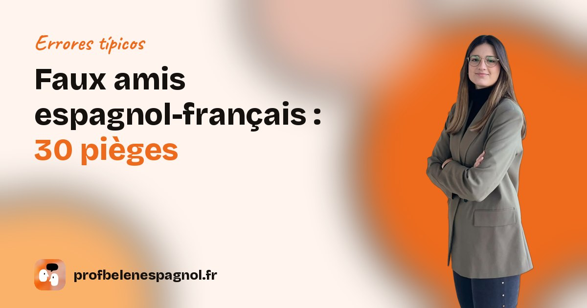

Faux amis espagnol-français : 30 pièges à éviter
Embarazada, constipado, éxito… Ces mots espagnols ressemblent au français mais veulent dire tout autre chose. Voici les 30 faux amis les plus fréquents, classés par situation, avec la bonne traduction.

En bref
- Un faux ami est un mot espagnol qui ressemble à un mot français mais n'a pas le même sens.
- Les plus piégeux pour les Français : embarazada (enceinte), constipado (enrhumé), éxito (succès) et quitar (enlever).
- La meilleure façon de les retenir : les apprendre dans une phrase, en contexte, et les réutiliser à l'oral.
Qu'est-ce qu'un faux ami en espagnol ?
L'espagnol et le français viennent tous deux du latin : environ trois quarts du vocabulaire se ressemblent. C'est une chance énorme pour les francophones… et un piège. Certains mots ont la même forme mais ont pris un sens différent au fil des siècles : ce sont les faux amis (en espagnol, falsos amigos).
Le problème, ce n'est pas de ne pas comprendre : c'est de croire comprendre. On dit une phrase avec assurance… et on raconte tout autre chose. Voici les 30 faux amis que je corrige le plus souvent chez mes élèves francophones, classés par situation.
Les 3 faux amis les plus gênants
« Estoy embarazada » ne veut pas dire « je suis embarrassée », mais « je suis enceinte ». Pour dire que tu es gêné(e) : me da vergüenza ou estoy avergonzado/a.
« Estoy constipado » ne veut pas dire « je suis constipé », mais « je suis enrhumé ». Très utile à la pharmacie… si on ne se trompe pas de sens.
« El éxito » n'est pas la sortie, c'est le succès. La sortie, c'est la salida : à retenir avant de chercher la sortie d'un aéroport.
Faux amis : santé et corps
| Espagnol | Veut dire | Ne veut pas dire |
|---|---|---|
| embarazada | enceinte | embarrassée → avergonzada |
| constipado | enrhumé | constipé → estreñido |
| gamba | crevette | jambe → pierna |
| molestar | déranger, gêner | molester → maltratar |
Faux amis : à table et à la maison
Au restaurant, demande la carta pour avoir le menu, et la cuenta pour l'addition. Et si tu veux payer par carte : ¿Puedo pagar con tarjeta?
| Espagnol | Veut dire | Ne veut pas dire |
|---|---|---|
| la carta | le menu, la lettre | la carte bancaire → la tarjeta |
| el vaso | le verre | le vase → el jarrón |
| la cena | le dîner | la scène → la escena |
| exprimir | presser (un fruit) | exprimer → expresar |
| el mantel | la nappe | le manteau → el abrigo |
| el pastel | le gâteau | le pastel (couleur) → el color pastel |
| la tasa | le taux, la taxe | la tasse → la taza |
Faux amis : les verbes du quotidien
Les verbes sont les plus traîtres, car on les utilise sans réfléchir. Quitar (enlever) et atender (s'occuper de) reviennent dans presque toutes les conversations.
| Espagnol | Veut dire | Ne veut pas dire |
|---|---|---|
| quitar | enlever, retirer | quitter → dejar, irse de |
| atender | s'occuper de, servir | attendre → esperar |
| entender | comprendre | entendre → oír |
| recordar | se souvenir, rappeler | enregistrer → grabar |
| contestar | répondre | contester → impugnar, protestar |
| discutir | se disputer, débattre | discuter → charlar, hablar |
| tirar | jeter | tirer (une corde) → tirar de, jalar |
| subir | monter | subir → sufrir, padecer |
| presumir | se vanter | présumer → suponer |
Faux amis : travail et vie sociale
| Espagnol | Veut dire | Ne veut pas dire |
|---|---|---|
| el éxito | le succès | la sortie → la salida |
| el suceso | l'événement, le fait divers | le succès → el éxito |
| la firma | la signature | la firme → la empresa |
| la oficina | le bureau | l'officine → la farmacia |
| el compromiso | l'engagement, l'obligation | le compromis → el acuerdo |
| la jubilación | la retraite | la jubilation → el júbilo |
| bizarro | courageux, vaillant | bizarre → raro |
| el nombre | le prénom, le nom | le nombre → el número |
| la ropa | les vêtements | la robe → el vestido |
| largo | long | large → ancho |
Comment retenir les faux amis (pour de bon)
- Apprends une phrase, pas un mot. « Estoy constipado, ¿qué me recomienda? » se retient bien mieux que « constipado = enrhumé ».
- Associe une image drôle. Une crevette (gamba) qui marche sur ses jambes : tu ne l'oublieras plus.
- Utilise-les à l'oral. Un mot qu'on a dit trois fois en conversation reste ; un mot lu dans une liste s'oublie.
- Fais-toi corriger. On ne repère pas seul un faux ami qu'on croit connaître : c'est tout l'intérêt d'un cours de conversation.
Les faux amis font partie des difficultés typiques des francophones, avec ser et estar ou le subjonctif. Dans mes cours particuliers d'espagnol en ligne, on les travaille en situation, pour que tu ne tombes plus dans le piège.